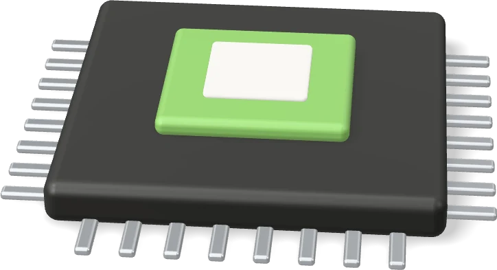
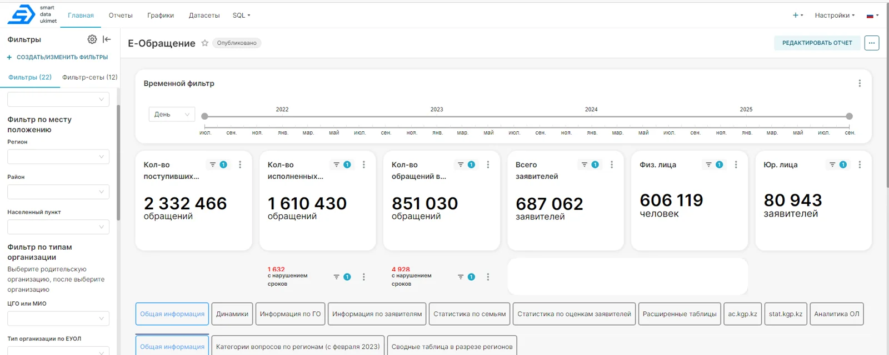
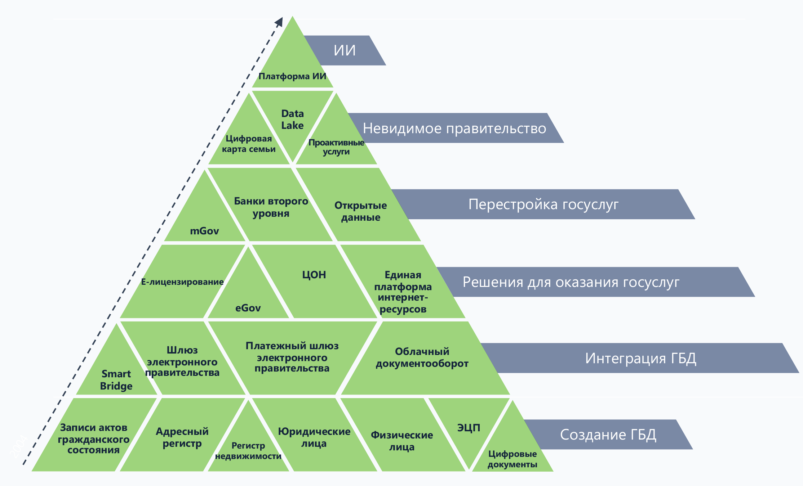
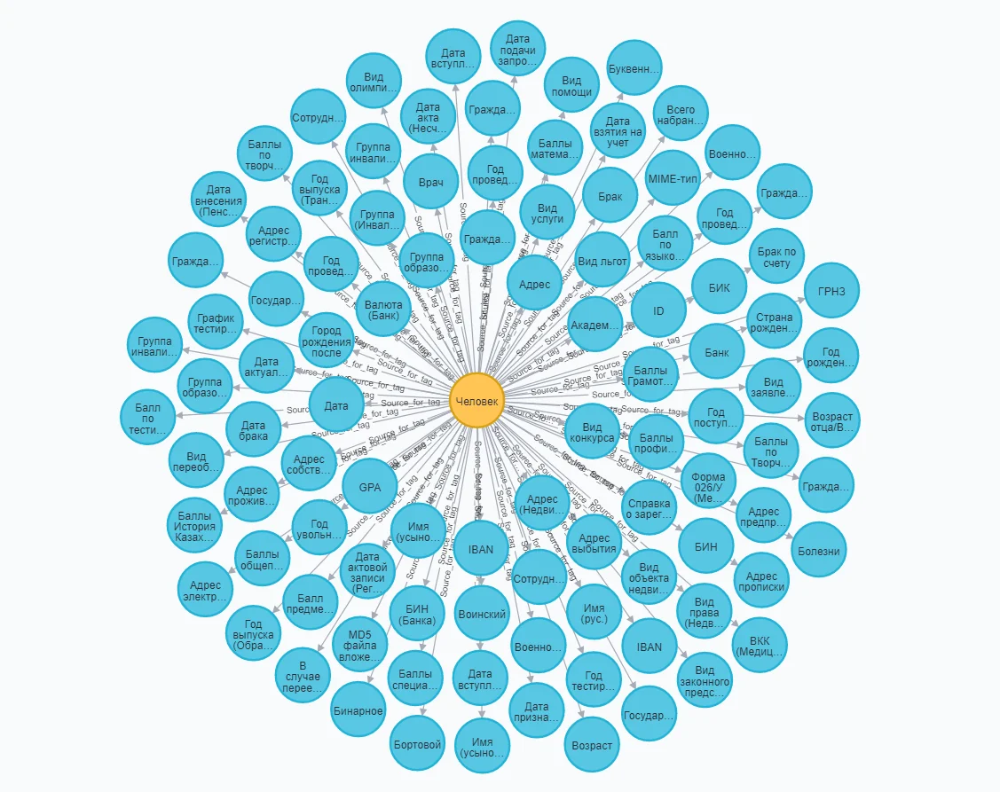
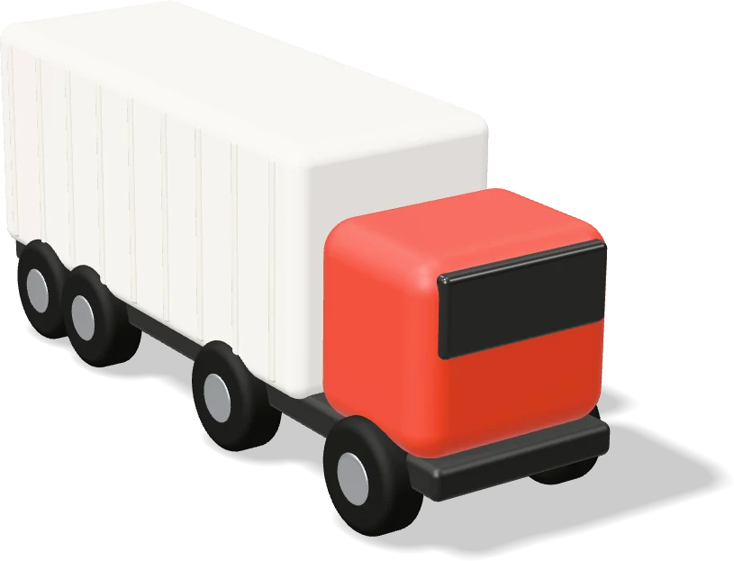
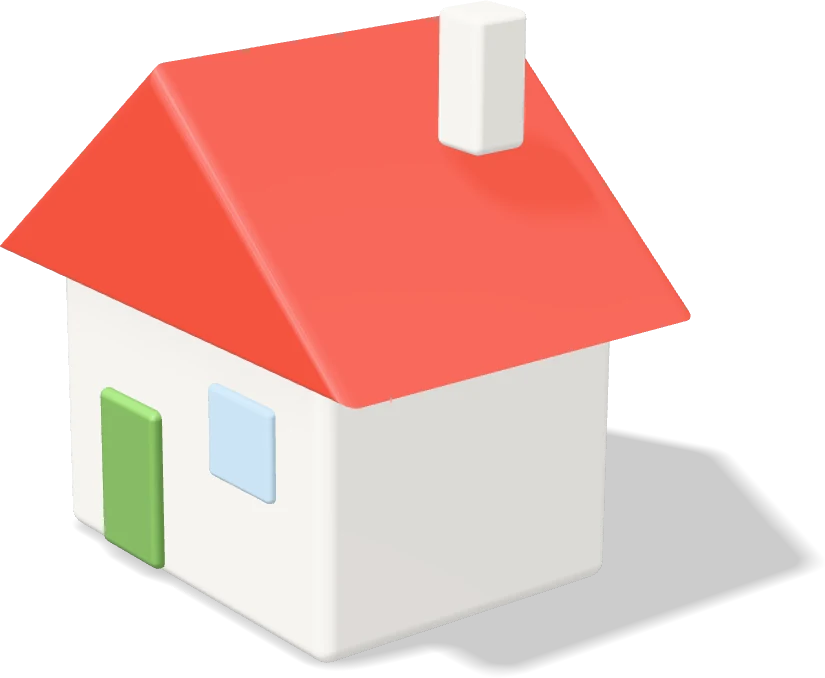

01
Большие данные и ИИ
в государственном
управлении Казахстана
Как данные и ИИ помогают государству: от писем граждан до раннего предупреждения рисков

ИИ-помощники
3,2+ млн обращений граждан ИИ помог обработать
Озера данных
>120 госбаз собраны в одну платформу Smart Data Ukimet
Астана · 2026
Блок 1 · ИИ-агенты и обращения граждан
02

ИИ помогает разбирать обращения граждан: e-Otinish
ИИ понимает суть письма, находит повторы и готовит черновик ответа. Решение и подпись — всегда за госслужащим.
3,2+ млн
обращений ИИ уже помог обработать в e-Otinish
2 332 466
обращений собрано для анализа в платформе SDU
687 062
заявителя: 606 119 граждан и 80 943 компании · средний возраст 43,8 года
Ранний сигнал
Всплеск жалоб в районе виден до того, как ситуация перерастет в протест
01
Отправляет по адресу
ИИ понимает смысл даже эмоционального письма с ошибками и отправляет в нужный госорган
02
Повторы и массовые жалобы
Объединяет одинаковые жалобы и замечает резкий рост по району или теме
03
Черновик ответа по закону
ИИ подбирает статьи закона, госслужащий проверяет и подписывает
Блок 1 · ИИ-агенты и обращения граждан
03
Как работают ИИ-помощники
на примере Минфина РК
Данные не уходят за рубеж: в отличие от публичного ChatGPT, модели работают на серверах внутри Казахстана.
01
ИИ-чатбот по законам
Ищет в базе законов
Вопрос инспектора или бизнеса
→ Находит точную статью закона
→ Готовит проект ответа
~150 вопросов в день, до 5 000 в месяц. Учтены Налоговые кодексы 2025 и 2026 гг.
02
Умный Call-центр
Своя модель
Бесплатная модель Gemma
→ Дообучение под наши задачи
→ Базы налоговой и госзакупок
Модель работает на наших серверах в защищенной сети
03
Проверка партнеров по бизнесу
Сразу списком
Список до 100 компаний
→ Сверка с базами налоговой
→ Справка и сигналы риска
Платит ли компания налоги и нет ли признаков фирмы-однодневки
Блок 1 · ИИ-агенты и обращения граждан
04
Что дает ИИ: быстрая работа и раннее предупреждение проблем
Письмо попадает к исполнителю за секунды, а не за недели, и госорган устраняет причину проблемы, а не последствия.
eGov GPT · госуслуги через простой чат
51
услуга уже доступна
цель — 150 к концу 2026 года
| Было · вручную | Стало · с помощником-ИИ |
|---|
| Куда направить | Недели пересылки между госорганами | Секунды: ИИ сам выбирает нужный госорган |
| Ответ гражданину | Типовой текст пишется вручную | Черновик от ИИ: человек проверяет и подписывает |
| Аналитика | Отчеты задним числом | Свежая сводка каждый день к 06:35 |
| Реакция | На последствия и протесты | На причину жалоб — заранее |
Ежедневная сводка в SDU
e-Otinish → SDU
- Число обращений по регионам в реальном времени
- Средние сроки рассмотрения
- Регионы, затягивающие ответы
- Темы, где растет недовольство
Как ИИ держат под контролем
01Отвечает только по проверенной базе законов — без выдумок
02Все вопросы и ответы ИИ записываются
03Закрытая сеть, личные данные скрыты
ИИ не принимает юридических решений: подпись и ответственность — за должностным лицом
Блок 2 · Основы работы с данными
05
Как устроены базы данных и откуда берутся данные
База данных — это электронная картотека: от одной записи о человеке до государственного реестра.
СУБД⟶Таблица / коллекция⟶Структура⟶Запись
Примеры программ
PostgreSQL · Oracle · MongoDB · SQL Server · Redis
01 Источники
- Госуслуги, ЦОНы и порталы
- Системы ведомств: школы, больницы, налоги
- Датчики: камеры, умные города
- Внешние: банки и бизнес
02 Как поступают
- Порталы и мобильные сервисы
- Обмен между госорганами
- Датчики и платежи
03 Где хранятся
- Госреестры граждан и компаний
- Ведомственные базы данных
- Хранилища и озера данных
1 : 1
один к одному
Гражданин — одно действующее удостоверение личности
1 : N
один ко многим
Один человек — пять зарегистрированных автомобилей
N : N
многие ко многим
Несколько учредителей — доли в десятке разных ТОО
PK
главный ключ: уникальный номер, например ИИН или БИН
FK
ссылка: связывает запись с другой таблицей
Блок 2 · Основы работы с данными
06
SQL и NoSQL: два вида баз данных
SQL — строгие таблицы для учета. NoSQL — гибкое хранение текстов, видео, потоков и связей.
SQL
Табличные базы
PostgreSQL · Oracle · MS SQL · MySQL
- Строгие таблицы, как в Excel
- Записи связаны по ИИН, БИН и другим ключам
- Ни одна операция не теряется и не искажается
- Налоги, реестры недвижимости, платежи
Рост: покупать один всё более мощный сервер
NoSQL
Гибкие базы
MongoDB · Redis · Cassandra · Neo4j
- Нет жесткого шаблона
- Тексты, досье, видеопотоки, логи
- Легко расширяются
- Быстро принимают большие потоки
Рост: просто добавить недорогие серверы
01
Документные
Хранят документы любой структуры
MongoDB · CouchDB
02
Ключ-значение
Мгновенный поиск по номеру
Redis · DynamoDB
03
Колоночные
Быстрые подсчеты по большим массивам
Cassandra · HBase
04
Графовые
Схема связей: люди, компании, счета, телефоны
Финразведка · ОПГ · картели
Neo4j · ArangoDB
Блок 2 · Основы работы с данными
07
Что такое большие данные и где их хранят
Большие данные — это не только много информации, но и скорость, разнообразие, достоверность и польза для решений.
КБ
Килобайтстраница текстаПБ
Петабайт13 лет HD-видеоЭБ
Эксабайтинтернет-трафик за день
VolumeV
Объемогромные массивы информации
VelocityV
Скоростьданные поступают каждую секунду
VarietyV
Многообразиетаблицы, тексты, видео, снимки
VeracityV
Достоверностьнасколько данным можно верить
ValueV
Ценностьпрактическая польза для решений
Свои серверы
Оборудование внутри РК — полный контроль у государства
Облако
Удобно и быстро, но важно, где физически лежат данные
Хранилище
Очищенные данные для готовых отчетов
Озеро данных
Все данные «как есть» — для ИИ и поиска закономерностей
Блок 2 · Основы работы с данными
08
Качество данных и защита от
потери: правило 3-2-1
«Мусор на входе — мусор на выходе»: без качества данных не работает ни аналитика, ни ИИ.
6 признаков качественных данных
Точность
Полнота
Согласован-
ность
Актуаль-
ность
Уникаль-
ность
Достовер-
ность
Качество
данных
01
Полная копия
Каждый раз копируется всё: надежно, но долго и дорого
02
Только новое
Копируется только изменённое за день: быстро, но нужна вся цепочка
03
Накопительное
Всё изменённое с последней полной копии: восстановить проще
Золотое правило 3-2-1
3копии данных: оригинал + 2 резерва
2разных типа носителей
1копия в другом месте: другой город или защищенный объект
Два вопроса к IT-службе
RPORTO
сбой
RPO — сколько последних данных можем потерять при сбое
RTO — через сколько система снова заработает
Блок 3 · Smart Data Ukimet и отраслевые озера данных
09
Путь е-правительства РК и озеро данных SDU

>120
государственных баз данных
>90
готовых аналитических решений
ТаджикистанТого
Передача опыта е-правительства другим странам
Блок 3 · Smart Data Ukimet и отраслевые озера данных
10
Как устроена платформа SDU
и «память» данных
Только открытые технологии, без западных лицензий: нас нельзя отключить извне.
01
ИсточникиPostgreSQLOracleMS SQLMySQLMongoDBAPI · CSV02
Сбор и передачаAirflowdbtDebeziumKafkaNiFi03
Хранение и ИИClickHouseS3SparkJupyterHubMLflow04
Отчеты и картыSupersetPower BIMetabaseGeoanalyzerTileServer GL
Безопасность и управление платформой
Keycloak · FreeIPA · DataHub · ELK · Grafana · GitLab

Цифровой слой
единые профили «Человек» и «Бизнес» со всей историей изменений
MDM — одна верная версия данных
ИИН заменен кодом
История гражданства · «Человек»
| код | гражданство | с | по |
|---|
| hash_id | Казахстан | 01.01.2000 | — |
| hash_id | Россия | — | 05.05.2013 |
| hash_id | Германия | 2021 | — |
История руководителей · «Бизнес»
| код | название | начало | конец | руководитель |
|---|
| bin_id | name_1 | 01.07.2015 | 01.01.2019 | hash_iin |
| bin_id | name_2 | 01.01.2020 | 05.05.2022 | hash_iin |
| bin_id | name_3 | 07.09.2023 | — | hash_iin |
«Машина времени» аналитика: система помнит прежних владельцев и связи, даже если фирму переоформили
Блок 3 · Smart Data Ukimet и отраслевые озера данных
11
Как сверка данных экономит
бюджет: реальные примеры
Сверка баз разных ведомств за минуты находит «мертвые души» и нарушения, которые вручную искали бы годами.
Аудит школьного питанияЭкономия
$72 млн
экономия за учебный год · 410 тыс. $ за 1 день
233 тыс.не являются учениками
1 799старше 18 лет
1 018в местах лишения свободы
221уехали из страны
96умерших
Очередь на льготное жилье «Кезекте»Очистка реестра
510 678
человек стояли в очереди без оснований
15 642умерших в очереди
3 300без ИИН
553нет в базе граждан
−50%срок ожидания
Верховный Суд: отбор присяжныхБез участия человека
60 → 2
дня на составление списка присяжных
×6рост дел за квартал
0ручных операций
Законо присяжных изменен
Энергобезопасность: рынок топливаПрогноз
01
Остатки топлива
на нефтебазах и АЗС по районам
02
Прогноз дефицита
предупреждение Правительства и акимов
03
Ценовые сговоры
сверка чеков АЗС и оптовых счетов
Блок 3 · Министерство финансов РК (КГД)
12
Минфин: вместо 14 старых систем — 5 современных
После IT-аудита из 14 разрозненных систем осталось 5, а «мозгом» стала SDF: ИИ разбирает чеки и счета-фактуры.
2003–2019: «зоопарк» из 14 систем
ИСНАSDFКЕДЕН
2003ИНИС
2008Акциз · ИШЕХД
2009СОНО · КНП
2011ИХДТАИС
2013ЦУЛС · Портал
2017АСТАНА-1
2019Е-окно
Новая схема
5 ИС
вместо 14
SDF уже работает: сама рассчитывает налоги и ведет единое цифровое досье на каждого налогоплательщика
Как ИИ разбирает чеки
01Кассовые чеки · 1,5 млн в день
02Шаг 1: топливо или другой товар
03Шаг 2: марка — АИ-92 · 95 · 98 · ДТ · ГАЗ
Счета-фактуры → 65 тыс. видов товаров: ИИ понимает даже названия с ошибками
Прогноз бюджета: несколько моделей ИИ прогнозируют доходы и расходы на годы вперед
Блок 3 · Министерство финансов РК (КГД)
13

ИИ на таможне и в налоговом контроле
ИИ «видит» груз на рентгене фуры и находит налоговые нарушения, которые пропускала старая система.
«Кеден» · ИИ распознает груз на рентген-снимках
6 000+
снимков для обучения ИИ
ИИ подбирает таможенный код товара: обучен на 9 млн деклараций 2025 г. · сравнивает рентген на въезде и выезде, чтобы груз не подменили
Налоговые проверки: ИИ против старой системы
672
скрытых нарушения
нашел ИИ в 3 кв. 2025 — +80% к обычной проверке, всего 21 ошибка
Доп. нарушения (нашел ИИ)
2 кв. 2025 3 кв. 2025
Теневые схемы
- 18 признаков риска для выбора, кого проверять
- Сквозной путь товаров (ТВ, смартфоны) от границы до прилавка
- Sandyq Beket: читает номера фур на КПП
Блок 3 · Министерство здравоохранения РК
14
Здравоохранение: единая
цифровая медкарта e-Densaulyq
Цели до 2028 года: подключить все клиники, помогать врачам с помощью ИИ и перевести услуги в онлайн.
Клиники, подключенные к единой системе
Решения врачей с подсказкой ИИ
Жители, пользующиеся онлайн-сервисами
Было: данные разбросаны
~80%
медданных лежали в разных частных системах → теперь собираются в единую базу e-Densaulyq
01
Единая медкарта пациента
Диагнозы, назначения, анализы, аллергии и вакцинация — в одном окне
02
Снимки для обучения медицинского ИИ
Проверенные базы КТ, МРТ и рентгена
03
Телемедицина
Консультации врачей для сел и школ
Блок 3 · Минтруда РК и ЦРТР
15

Цифровая карта семьи: как увидеть
социальные риски заранее
Семьи оцениваются по методике ООН — видно, где может назреть напряженность, еще до того, как она проявится.
6,25 млнсемей оцифровано
20,27 млнграждан
20+источников данных
120+показателей
5 уровней благополучия · методика ООН
A3,02 млн · благополучный
B1,65 млн · удовлетворительный
C≈1,0 млн* · неблагополучный
D352 тыс. · кризисный
E224 тыс. · экстренный
* расчетно: остаток от общего числа семей
85%мам получают пособие без визита в ЦОН — по SMS
3 млнпользователей «Социального кошелька»
ИИГотовые подсказки акимам (Иргизский район)
Признаки социального риска
- За чертой бедности
- Нет жилья
- Нет медстраховки
- Наркотики и алкоголь
- Закредитованность
- Неплательщики алиментов
- Проблемы с законом
- Молодежь без дела
Кризисные семьи + молодежь без дела + долги = риск
по данным Цифровой карты семьи
Заключение · национальный цифровой суверенитет
16
Итоги: управление данными и национальная безопасность
Большие данные дают государству главное — время на упреждение
01
Единые правила и обмен даннымиВедомства больше не держат данные у себя: общие платформы SDU, SDF, e-Densaulyq и QazTech
02
Порядок в данныхЧистка реестров от «мертвых душ», дублей и подделок — основа экономической безопасности
03
Надежная защитаДанные хранятся в РК, резервные копии по правилу 3-2-1, личные сведения скрыты от аналитиков
04
Свой ИИСобственные модели ИИ (в т.ч. KazLLM) работают внутри страны и заранее выявляют угрозы, контрабанду и социальные риски